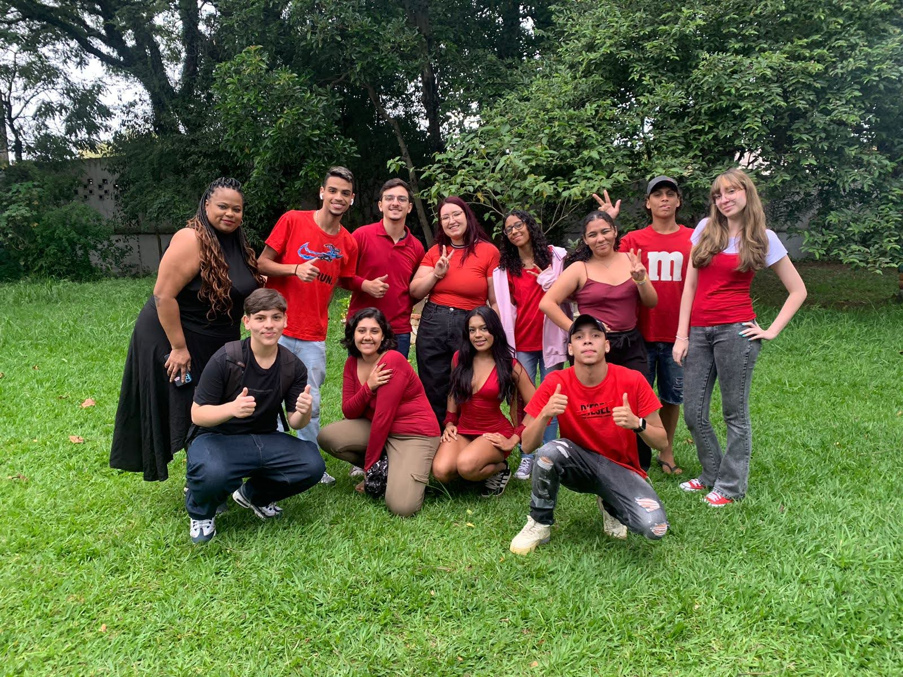

Marques Beauty
Grupo: BGM Coders
Participantes: Bruna Bueno, Guilherme Oliveira, Mariana Marques
Um site para um estúdio de maquiagem, focado em comunicação e marketing digital.
Ver projetoturma de 2024
🤍✨👩🏻💻🥴
Cara, que turma incrível!
Incrivelmente louca, incrivelmente criativa, incrivelmente bagunceira e, acima de tudo,
incrivelmente maravilhosa!
Ver vocês se formando (ou pelo menos a maioria, né? kkk) é emocionante. Já estou sentindo saudades das loucuras, das risadas e até dos surtos de última hora! 😩🤧
Saudades do pé preto do Robson, do Rhamon com a mochila inseparável, dos gritos lendários da Mariana e das batalhas de volume entre Rafael e Bruna. E, sim, finalmente um pouco de paz sem Taylor Swift e Harry Styles tocando sem parar – sério, Geovanna e Julia, vocês fizeram um loop infinito! Kkk.
Vocês foram um verdadeiro reality show: teve fofoca (adoroooo), talaricagens, casais que surgiram e desapareceram como mágica, surtos com protótipos e, claro, os “episódios especiais” dignos de "Casos de Família". Cada projeto era uma aventura – às vezes mais drama que código, mas no final, sempre funcionava (ou quase!).
E falando em projetos, vocês brilharam! Criaram desde lojas virtuais de música até lojas de roupas temáticas, com um destaque inesquecível para as do Palmeiras – porque aparentemente, esporte é uma religião aqui. E como esquecer a Loja da Bruna, criada pelo Guilherme? Bruna, a estrela do site, vinha em vários estilos como num jogo – um projeto tão doido quanto apaixonado. Esse nível de criatividade só podia vir de vocês!
Agora, a melhor parte: muitos duvidaram de vocês. Alguns professores chegaram a achar que vocês não iam conseguir entregar o TCC ou até mesmo se formar. Mas, como sempre, vocês provaram o contrário! Não só entregaram projetos incríveis, como se destacaram pra caramba e mostraram do que são capazes. Superaram expectativas, calaram os pessimistas e deram um show de determinação e talento.
Tudo isso enquanto dominavam Programação e Algoritmos, criavam interfaces incríveis, mergulhavam em Banco de Dados, aprendiam sobre Usabilidade, Acessibilidade Digital e até Segurança da Informação. Vocês não só aprenderam a desenvolver sistemas; vocês aprenderam a contar histórias, superar desafios e deixar uma marca única – e isso é muito mais importante do que qualquer nota.
Desculpa às próximas turmas, mas vocês são a turma. Obrigado por cada momento, cada linha de código, cada surto e cada conquista. Continuem sendo incríveis e levando todo esse talento e humor para onde forem. O mundo da informática ganhou uma geração de ouro! 😍
Grupo: BGM Coders
Participantes: Bruna Bueno, Guilherme Oliveira, Mariana Marques
Um site para um estúdio de maquiagem, focado em comunicação e marketing digital.
Ver projetoGrupo: Bueno´s Coorp
Participantes: Marcos Bueno
Plataforma para compras e exibição de serviços de cuidados para pets.
Ver projetoGrupo: Arranca DIU
Participantes: Pedro Oliveira, Rafael Vasconcelos, Rhamon Santos
Um site institucional para uma doceria, com integração para vendas externas.
Ver projetoGrupo: EncanTech
Participantes: Dulce Mary, Geovanna Lo, Julia Rocha, Robson Pereira
Desenvolvimento de um site personalizado para clientes com foco em UX e identidade visual para uma papelaria.
Ver projetoBruna Bueno
Dulce Correia
Geovanna Lo
Guilherme Oliveira
Júlia Rocha
Marcos Bueno
Mariana Marques
Pamela Nascimento
Pedro Oliveira
Rafael Vasconcelos
Rhamon Santos
Robson Pereira